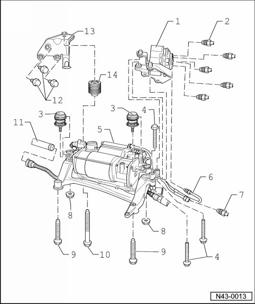

Air Supply Unit with Solenoid Valve Block Assembly Overview
Air Supply Unit with Solenoid Valve Block Assembly Overview

1 Solenoid valve block
• Remove in order to replace air supply unit.
2 Air line
• 4 Nm.
• Clean pipe connection before loosening.
• Air escapes when connections are loosened.
• Protect threaded connection from dirt.
3 Rubber bushing
• Replace only as complete unit.
4 Bolt
• 9 Nm.
5 Air supply unit
• Removing and installing without solenoid valve block, refer to --> [ Air Supply Unit without Solenoid Valve Block ] Air Supply Unit without Solenoid Valve Block.
• Removing and installing with solenoid valve block, refer to --> [ Air Supply Unit with Solenoid Valve Block ] Air Supply Unit with Solenoid Valve Block.
• Servicing, refer to --> [ Air Supply Unit Assembly Overview ] Air Supply Unit Assembly Overview.
6 Air line
• 4 Nm.
• Between solenoid valve block and air supply unit.
• Clean connections before loosening.
• Air escapes when connections are loosened.
• Protect threaded connection from dirt.
7 Air line
• 4 Nm.
• Between solenoid valve block and tire inflation connection.
• Clean connections before loosening.
• Air escapes when connections are loosened.
• Protect threaded connection from dirt.
8 Nut
• 9 Nm.
9 Bolt
• 20 Nm
10 Bolt
• 20 Nm.
11 Intake pipe
12 Bolt
• 20 Nm.
13 Bracket
14 Rubber bushing
• Replace only as complete unit.